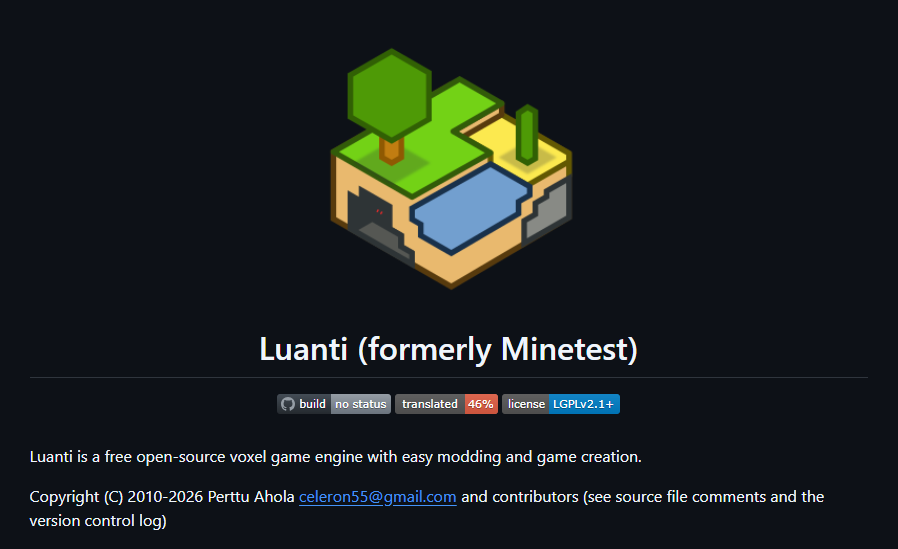
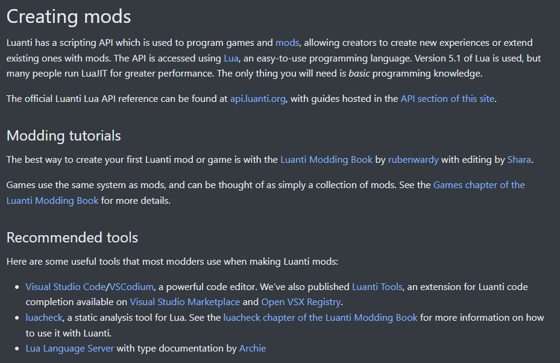

Luanti
Originally a game written in Lua to explore Minecraft game mechanics, Luanti has evolved into a large open-source project.
Luanti isnt really a game nowadays, per se, insomuch as it is a game engine, where games are created by bundling mods together to make a game. Games are collections of mods that together establish a complete gameplay experience, while individual mods serve to modify or complement specific features within games, and may be added, replaced, or removed by players to customize them.

General Gameplay:
Games installed on Luanti can be played through worlds, formed using 3D voxels called nodes, which function like digital building blocks. Luanti allows users to create their own scenery and mobs, or they can use packages that have been created by other users; these content creators are referred to as modders or developers.
Game worlds are procedurally-generated voxel worlds, nearly identical to minecraft. Luanti provides two play-style options across games: Enable Damage (AKA survival mode) and Creative Mode.
Modding:
Luanti gives developers the ability to create games and mods using Lua, a beginner-friendly programming language. Mods can be freely added, removed, or replaced within any game, giving players a simple and intuitive way to customize games to their liking.
